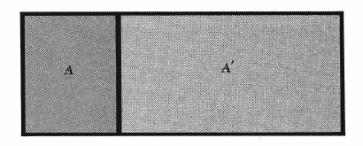

What is entropy?
Introduction
When it comes to deep learning, it is no doubt to encounter a concept called information entropy 1. My friend asked a question for me—So, what is entropy? In physics, entropy is a concept that shows quotient of an infinitesimal amount of heat to the instantaneous temperature 2. Austrian physicist Boltzmann explained entropy as the degree of disorder or randomness in a system.
Mathematical derivation
In this blog, I will show a kind of method presented by Frederick in his classical book Fundamentals of statistical and thermal physics. Clearly and step by step:
Imagine two thermal internal interaction between two macroscopic systems $A$ and $A^{\prime}$, we shall denote the respective energies of these systems by $E$ and $E^{\prime}$. Moreover, the combined system $A^{(0)} \equiv A + A^{\prime}$ is isolated and its total energy $E^{(0)}$ is therefore constant 3.
It follows that the the probability $P(E)$ of finding this combineed system in a configuration where $A$ has an energy is simply proportional to the number of states $\Omega^{(0)}(E)$. This probability could also be written as
$$ \begin{equation} P(E) = \frac{\Omega ^{(0)}(E)}{\Omega_{\text{tot}}}, \end{equation} $$
where $\Omega ^{(0)}_ {\textrm{tot}}$ denotes the total number of states accessible to $A^{(0)}$. $\Omega ^{(0)}_ {\textrm{tot}}$ can be obtained by summing $\Omega^{(0)}(E)$ over all possible energies $E$ of the system $A$, which means $\Omega ^{(0)}_{\text{tot}}$ is constant. In symbols this can be written as
$$ \begin{equation} P(E) = C \Omega^{(0)}(E), \end{equation}\label{eq2} $$
where $C$ is a constant of proportionality independent of $E$. Indeed, suppose that $A$ has an energy $E$, and $A^{\prime}$ has the corresponding energy known as to be $E^{\prime} = E^{(0)}-E$. In Eq. \eqref{eq2}, $\Omega^{(0)}(E)$ is simply given by the product
$$ \begin{equation} \Omega^{(0)}(E)=\Omega(E) \Omega^{\prime}\left(E^{(0)}-E\right). \end{equation} $$
Correspondingly, system $A$ having an energy near $E$ is simply given by
$$ \begin{equation} P(E)=C \Omega(E) \Omega^{\prime}\left(E^{(0)}-E\right). \end{equation} $$
To locate the position of the maximum of $P(E)$, we need to find the value when
$$ \begin{equation} \frac{\partial \ln P}{\partial E}=0, \end{equation} \label{eq5} $$
where
$$ \ln P(E)=\ln C+\ln \Omega(E)+\ln \Omega^{\prime}\left(E^{\prime}\right). $$
As what we have said before, $E^{\prime}=E^{(0)}-E$. Hence, Eq. \eqref{eq5} becomes
$$ \begin{equation} \frac{\partial \ln \Omega(E)}{\partial E} - \frac{\partial \ln \Omega^{\prime}\left(E^{\prime}\right)}{\partial E^{\prime}}=0, \end{equation} $$
where we have to introduced the definition
$$ \begin{equation} \beta(E) \equiv \frac{\partial \ln \Omega}{\partial E}. \end{equation} $$
Then we get $\beta(\tilde{E}) = \beta^{\prime}(\tilde{E}^{\prime})$, where $\tilde{E}$ and $\tilde{E}^{\prime}$ denote the corresponding energies of $A$ and $A^{\prime}$ at the maximum, By its definition, the parameter $\beta$ has the dimensions of a reciprocal energy. It is convenient to introduce a dimensionless parameter $T$ defined by writing $\beta = (k T)^{-1}$, where $k$ is some positive sonstant having the dimensions of energy.
Let me explain that why is $\beta = (k T)^{-1}$? Like what we have learnt in thermodynamics,
entropy is a concept that shows quotient of an infinitesimal amount of heat to the instantaneous temperature.
The corresponding connection can be shown like this
$$
\begin{equation}
\frac{1}{T} = \frac{\partial S}{\partial E},
\end{equation}\label{eq8}
$$
we usually use this definition $S \equiv k \ln \Omega$, combine it with Eq. \eqref{eq8}, we get
$$
\begin{equation}
\frac{1}{T} = \frac{k \partial \Omega}{\partial E} \rightarrow \frac{1}{kT} \equiv \beta \equiv \frac{\partial \ln \Omega}{\partial E}.
\end{equation}
$$
The truth is that when entropy of two subsystems reaches the maximum value of the state is the most likely state for both systems.